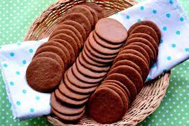

Swedish Pepparkakor Cookie Recipe

Swedish Cookies that you can eat all year
Pepparkakor cookies are a Swedish specialty found around Christmas. But I like to have them all year!
Pepparkakor cookies are spiced, crunchy and not too sweet. I really enjoy eating them with tea.
This recipe makes quite a lot of cookies, I like to make the dough and then freeze half and bake the other half. The dough does quite well in the freezer.
Ingredients
- 1/2 pound (2 sticks) butter (preferrably unsalted)
- 1.25 cups sugar
- 1 beaten egg
- 5 TBSP maple syrup
- 3.5 cups flour
- 2 teaspoons baking soda
- 1.25 teaspoons ground cinnamon
- 1 teaspoon ground cloves
- 1.25 teaspoons ground ginger
- 1.25 teaspoons ground cardamom
Steps
- Pre-heat oven to 375 degrees Fahrenheit
- Cream butter, sugar until light and fluffy.
- Add beaten egg and maple syrup.
- Sift flour and other ingredients, add to first mixture and mix well.
- Roll into logs (makes about 3 logs).
- Refridgerate logs overnight
- Roll logs in red and green sprinkles or crushed almonds.
- Slice dough very thin (about the width of a dime)
- Bake 10-15 minutes at 375 degrees Fahrenheit